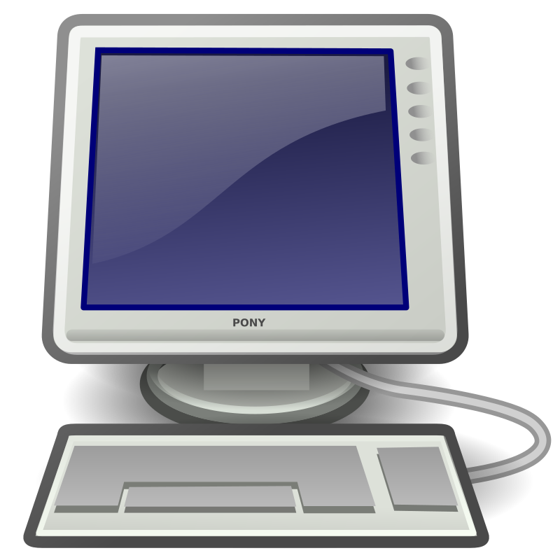

Programador Artigo Dissuassão Ler Editar Ver histórico Origem: Wikipédia, a enciclopédia livre Esta página cita fontes, mas que não cobrem todo o conteúdo. Ajude a inserir referências. Conteúdo não verificável pode ser removido. — Encontre fontes: Google ( notícias , livros e acadêmico ) (Abril de 2016) Em ciências dacomputação; programador, desenvolvedor, codificador ou engenheiro de software é alguém que escreve, desenvolve ou faz manutenção de software em um grande sistema ou alguém que desenvolve software para uso em computadores pessoais. [1] Primeiros programadores Ada Lovelace, a primeira programadora Ada Lovelace é historicamente considerada a primeira programadora. Ela foi a primeira a desenvolver um algoritimo para implantação em um computador, a máquina de análise de Charles Babbage , em outubro de 1842. [3] Os que possuem excelentes habilidades em programação de computadores podem se tornar famosos, apesar disto ser normalmente limitado aos círculos da engenharia de software. Muitos dos mais notáveis programadores são chamados algumas vezes de "hackers" Programadores profissionais trabalham em vários ambientes, incluindo departamentos de TI corporativos, grandes empresas de software e pequenas empresas de serviços. Muitos programadores profissionais também trabalham para empresas de consultoria nas instalações dos clientes. Cargos em TI Na área de tecnologia da informação não existem apenas os programadores, mas diversos outros cargos encarregados de gerenciar, analisar e criar toda a estrutura do software sem mesmo escrever uma linha de código. Gerente de projeto: não aplicável apenas na área de TI, responsável por integrar toda a equipe de engenheiros, analistas, DBA e programadores. Gerencia prazo, custo e escopo do projeto. Arquiteto de software: arquiteto de software é a pessoa responsável por criar toda a estrutura do software a ser desenvolvido, bem como o que o software deve fazer, como deve responder, como se comunicar com outros softwares e usuário. Ele é comparado a um engenheiro civil que não levanta paredes, mas realiza todos os cálculos e planejamento da estrutura de um prédio. Analista de sistemas: responsável pela comunicação com o usuário, ver os requisitos necessários do software, analisar problemas e melhores soluções. Geralmente ele já trabalhou algum tempo como programador e tem um conhecimento na área, mas muitas vezes trabalha só com documentação do software. Analista de testes: responsável pela qualidade do software, possui conhecimento que tem como função criar testes no sistemas e gerar roteiros de automação de testes, fazendo a análise de erros. Analista de segurança: responsável por averiguar problemas em softwares e sistemas operacionais utilizados numa rede / empresa, treinado para proteger de ataques e muitas vezes tem vasto conhecimento em como realizar os mesmos. Programador: responsável pela implementação e correção de erros/defeitos no sistema. Seu foco é desenvolver novas soluções e pôr em prática todas as necessidades impostas pelo analista de sistemas. Administrador de banco de dados (ABD ou DBA, sigla em inglês): o administrador do banco de dados, onde são guardadas as informações, ele não programa, mas é responsável por gerenciar como são guardadas as informações, meios de otimização de buscas, segurança dos dados e permissão de acesso. Tipo de programadores Programador Web: É o programador especialista em criar sites que são considerados páginas dinâmicas, como portais e fóruns.[4] Linguagens geralmente utilizadas: HTML (incluindo JavaScrip t e CSS),Java, PHP, .NET (ASP, C# e VB),Ruby ,Python e Perl. Programador Desktop: É o programador que desenvolve aplicativos para rodar localmente nas máquinas. Linguagens geralmente utilizadas: C,C++ ,C# e Java. Programador Mobile: é o programador especialista na criação de aplicativos para celulares, tablets e demais dispositivos móveis. As linguagens mais usadas são Java, Kotlin e Swift. Programador de Jogos: trabalha com a programação de jogos eletrônicos, podendo desenvolver para diversas plataformas, como: Smartphones, PCs e consoles(as) e dispondo de muitas opções de linguagens de programação, sendo C#, C++ e Java as mais populares atualmente Programador de Sistemas Embarcados: desenvolve software para sistemas computacionais especializados, em tempo real e/ou de alto risco, como os encontrados em aviões, carros, caixas eletrônicos e hospitais. Também pode desenvolver para IoT. Como esses sistemas geralmente são limitados em recursos (memória, processamento etc.), as linguagens comumente usadas nessa área são C, C++, Rust e, em certos casos, Java, Python e Assembly. Programador executivo: é o programador que coordena o processo de aplicação do código em um projeto, independente da linguagem ou metodologia de trabalho escolhida pelos analistas e GPs (gerentes de projetos). O seu trabalho pode ser comparado ao de um executivo comum: incorpora a pessoa jurídica, visa somente lucros e requer o máximo de sua equipe de programação. Exemplos: Bill Gates , Steve Wozniak , Mark Zuckerberg , Gabe Newell, entre outros. Programador sonoro: é a pessoa encarregada de manipular faixas de áudio a fim de montá-las, mixá-las e melhorá-las Referências Definição de Programador».« Dicio. Consultado em 29 de Abril de 2016 Fuegi, J.; Francis, J. (2003). Lovelace & Babbage and the creation of the 1843 'notes'. Annals of the History of Computing. 25. [S.l.: s.n.] pp. 18–26. Doi :10.1109/MAHC.2003.1253887 J. Fuegi and J. Francis, "Lovelace & Babbage and the creation of the 1843 'notes'." Annals of the History of Computing 25 #4 (October–December 2003): 19, 25. Digital Object Identifier «Profissão: programador Web». Tecmundo. Consultado em 29 de Abril de 2016 Ver também Análise de sistemas e tecnologia da informação Ciência da computação Computador Hacker Programação de computadores  Este artigo sobre informática é um esboço. Você pode ajudar a Wikipédia expandindo-o. Portal das tecnologias de informação Categorias: Programação | Profissionais ligados à informática | Tecnologia da informação